kaggle Data Visualization
Hello, Seaborn
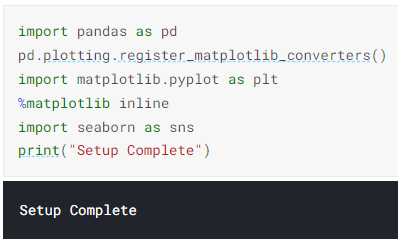

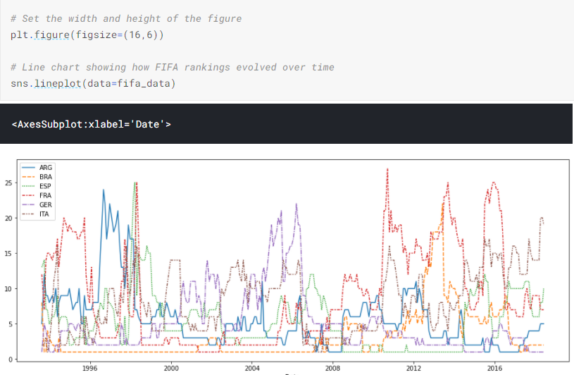
Line Charts
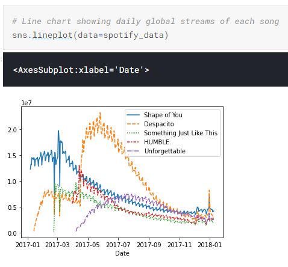
sns.lineplot tells the notebook that we want to create a line chart.
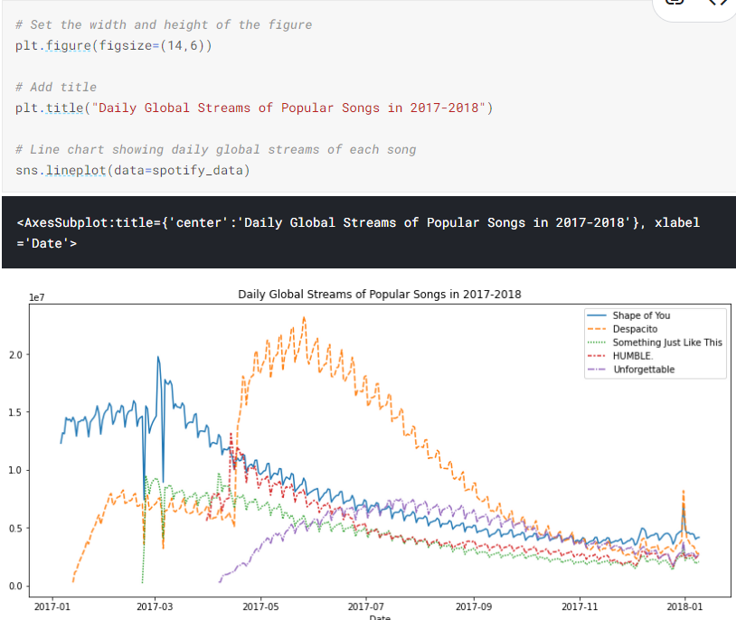
The first line of code sets the size of the figure to 14 inches (in width) by 6 inches (in height). To set the size of any figure, you need only copy the same line of code as it appears. Then, if you’d like to use a custom size, change the provided values of 14 and 6 to the desired width and height.
Plot a subset of the data
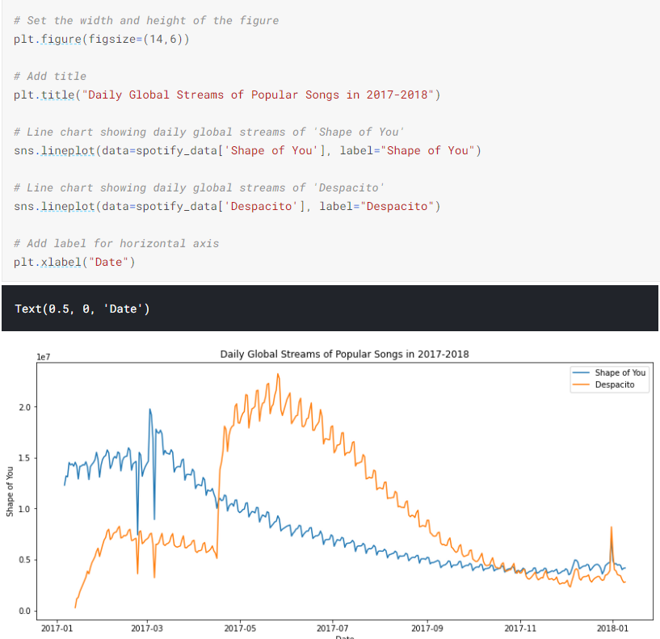
Bar Charts and Heatmaps
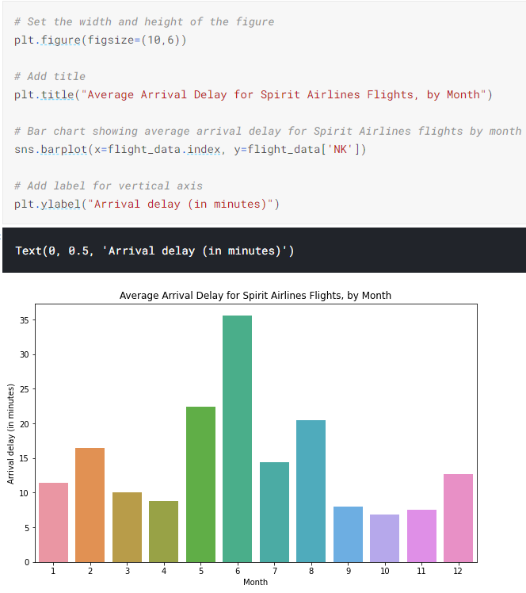
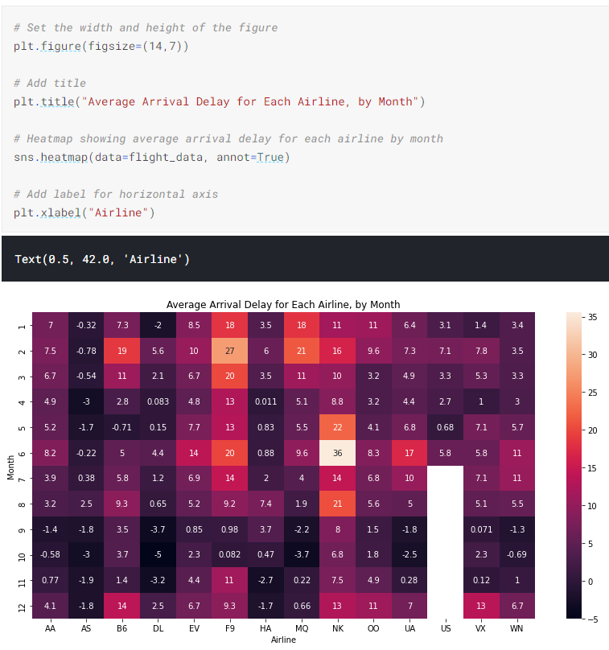
annot=True - This ensures that the values for each cell appear on the chart.
Scatter Plots
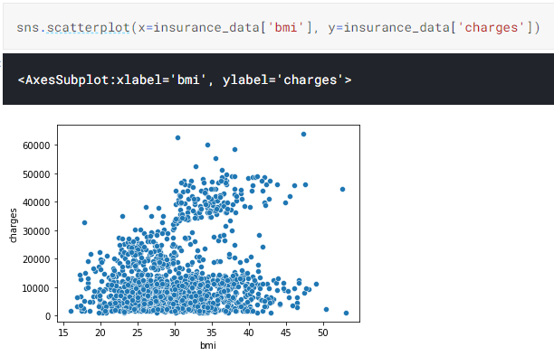
To double-check the strength of this relationship, you might like to add a regression line, or the line that best fits the data. We do this by changing the command to sns.regplot.
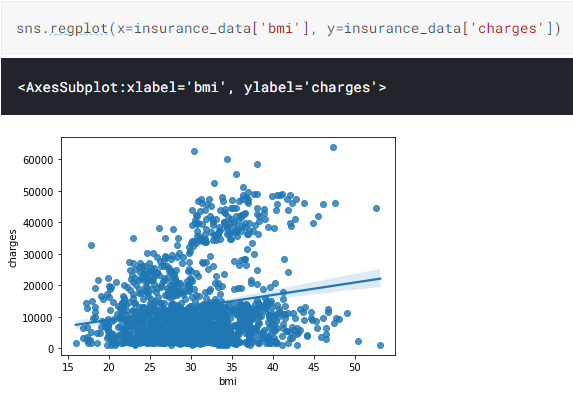
Color-coded scatter plots
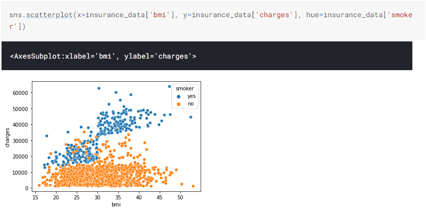
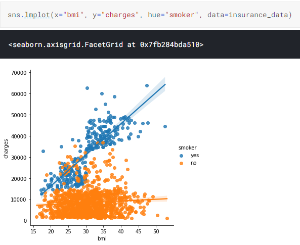
We’ll refer to this plot type as a categorical scatter plot, and we build it with the sns.swarmplot command.
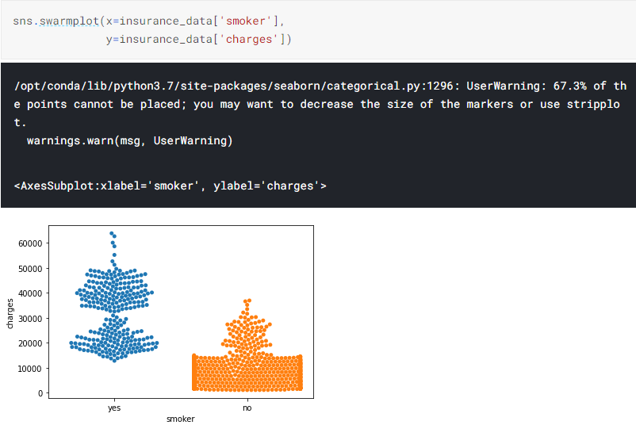
Distribution
Histogram
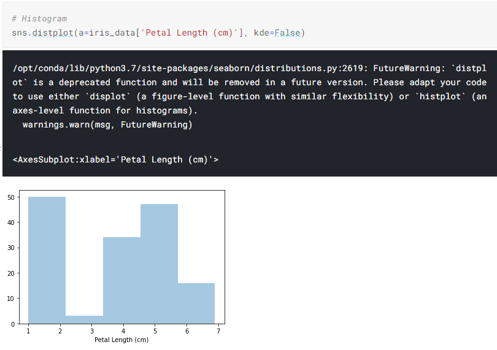
We customize the behavior of the command with two additional pieces of information:
a=chooses the column we’d like to plot (in this case, we chose'Petal Length (cm)').kde=Falseis something we’ll always provide when creating a histogram, as leaving it out will create a slightly different plot.
Density plot
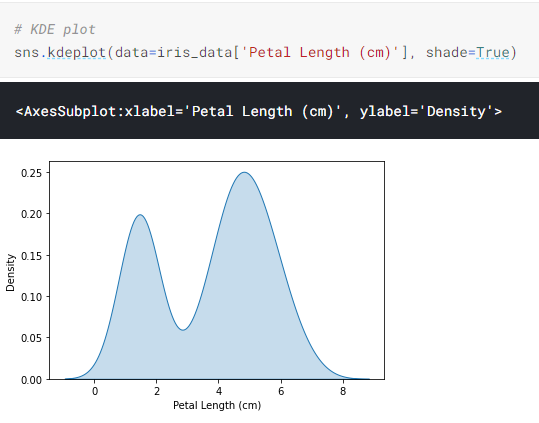
2D KDE plots
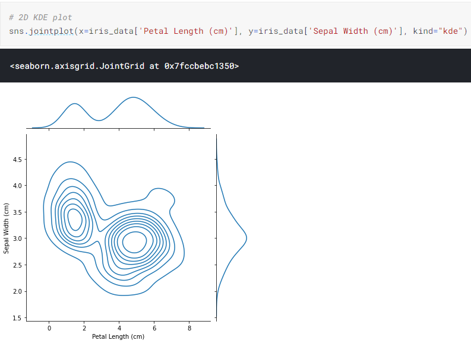
Color-coded plots
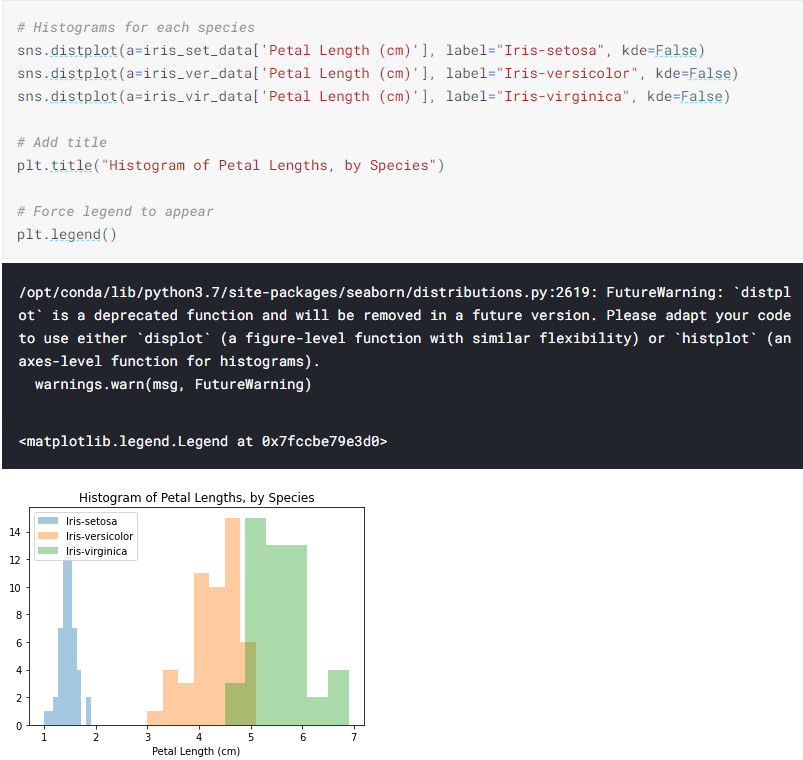
In this case, the legend does not automatically appear on the plot. To force it to show (for any plot type), we can always use plt.legend().
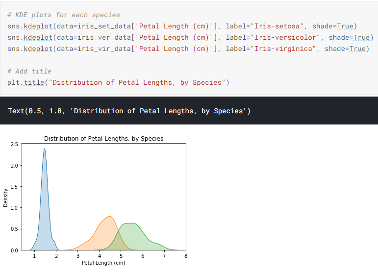
Choosing Plot Types and Custom Styles

Since it’s not always easy to decide how to best tell the story behind your data, we’ve broken the chart types into three broad categories to help with this.
Trends
- A trend is defined as a pattern of change.
sns.lineplot- Line charts are best to show trends over a period of time, and multiple lines can be used to show trends in more than one group.
Relationship
- There are many different chart types that you can use to understand relationships between variables in your data.
sns.barplot- Bar charts are useful for comparing quantities corresponding to different groups.sns.heatmap- Heatmaps can be used to find color-coded patterns in tables of numbers.sns.scatterplot- Scatter plots show the relationship between two continuous variables; if color-coded, we can also show the relationship with a third categorical variable.sns.regplot- Including a regression line in the scatter plot makes it easier to see any linear relationship between two variables.sns.lmplot- This command is useful for drawing multiple regression lines, if the scatter plot contains multiple, color-coded groups.sns.swarmplot- Categorical scatter plots show the relationship between a continuous variable and a categorical variable.
Distribution
- We visualize distributions to show the possible values that we can expect to see in a variable, along with how likely they are.
sns.distplot- Histograms show the distribution of a single numerical variable.sns.kdeplot- KDE plots (or 2D KDE plots) show an estimated, smooth distribution of a single numerical variable (or two numerical variables).sns.jointplot- This command is useful for simultaneously displaying a 2D KDE plot with the corresponding KDE plots for each individual variable.
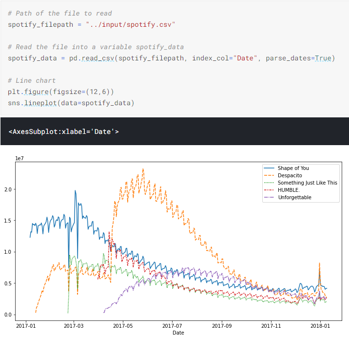
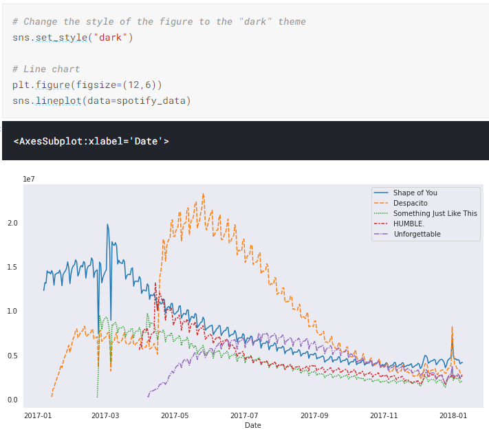
Seaborn has five different themes: (1)"darkgrid", (2)"whitegrid", (3)"dark", (4)"white", and (5)"ticks", and you need only use a command similar to the one in the code cell above (with the chosen theme filled in) to change it.
Final Project
Kaggle Datasets
You can access Kaggle Datasets by visiting the link below:
https://www.kaggle.com/datasets
The link will bring you to a webpage with a long list of datasets that you can use in your own projects.